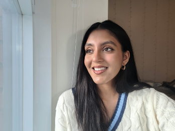

|  |
Hello!👋
I am an aspiring UX designer, currently pursuing a degree
in Global Business and Digital Arts at the University of
Waterloo. Growing up, I was always fascinated by the
world around me, constantly observing and analyzing
everything from the way people interacted to the design
of physical spaces. My passion for all forms of design,
from fashion to architecture, was ignited at a young age
and has only continued to grow.
It was through this journey that I stumbled upon UX design, and it was love at first sight. The ability to create meaningful work that prioritizes the user experience and has a real impact on people's lives is what drives me. With my strong foundation in problem-solving from my minor in math and my passion for design, I believe that I possess a unique skill set that is perfectly suited to the world of UX. When I'm not designing, I enjoy a wide range of hobbies, including sewing and fashion design, pottery, reading, and hiking. These activities provide me with inspiration and help to fuel my creative energy. |